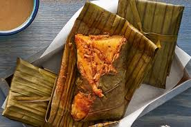

pozole
22/07/2018
El pozole (del náhuatl pozolli, de tlapozonalli, «hervido» o «espumoso»,1 o del cahíta posoli, «cocer maíz») es un plato de México y Centroamérica, es una especie de caldo hecho a base de granos de maíz de un tipo conocido comúnmente como cacahuazintle, a la que se agrega, según la región, carne de pollo o de cerdo como ingrediente secundario.1 De esta preparación básica existen variaciones por todo el territorio mexicano. Por ejemplo, el pozole blanco de Guerrero y el rojo de Sonora, Sinaloa, Nayarit, Guanajuato y Jalisco2. A este platillo se le puede acompañar con tostadas de crema, pata y otras especialidades de la cocina mexicana.
tamales
22/07/2018
El tamal (del náhuatl tamalli) es un alimento de origen mesoaméricano preparado generalmente a base de masa de maíz rellena de carnes, vegetales, chiles, frutas, salsas y otros ingredientes.12 Son envueltas en hojas vegetales como de mazorca de maíz o de plátano, bijao, maguey, aguacate, canak, entre otras, e incluso papel de aluminio o plástico, y cocida en agua o al vapor.34 Pueden tener sabor dulce o salado.